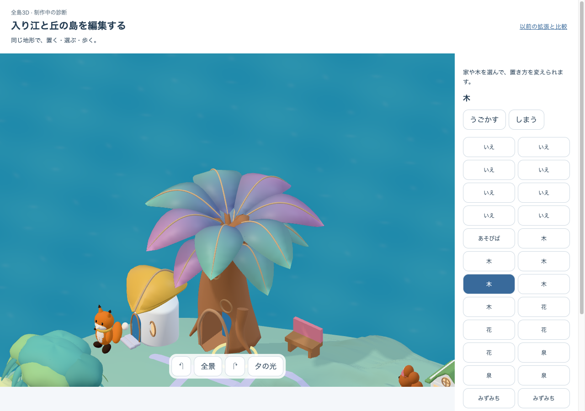
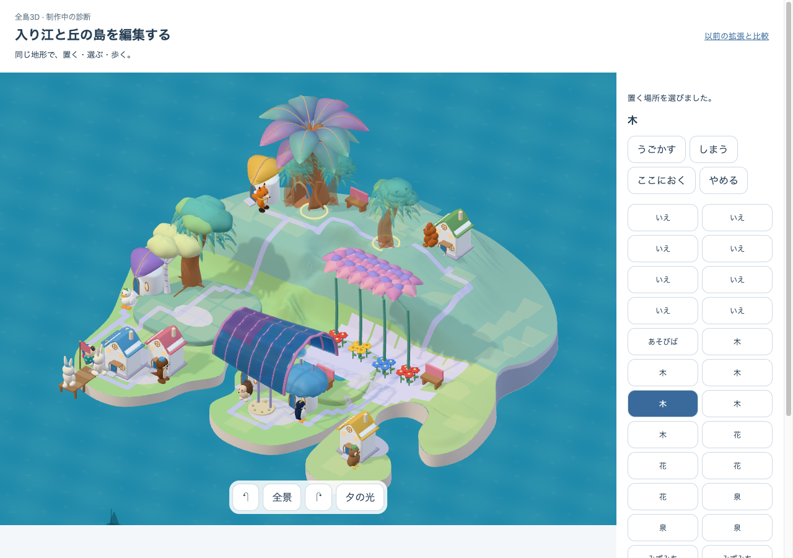
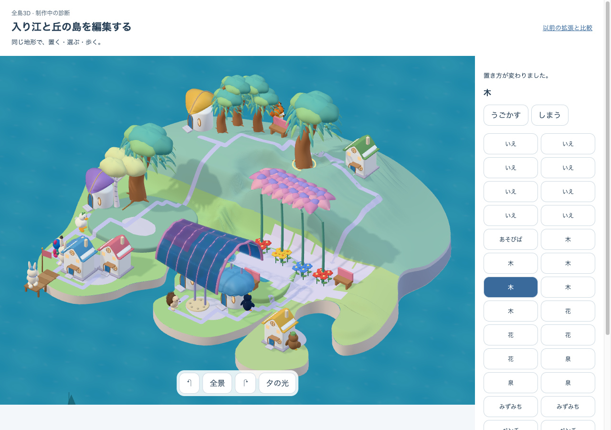
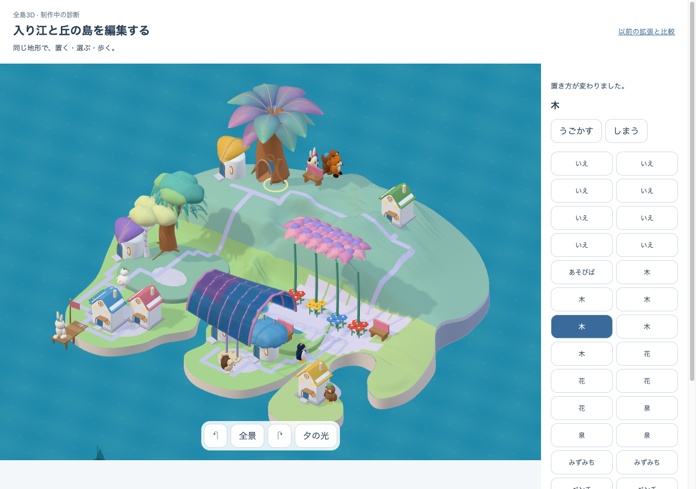
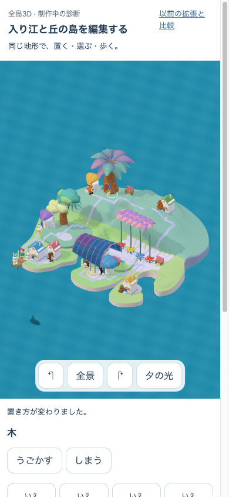
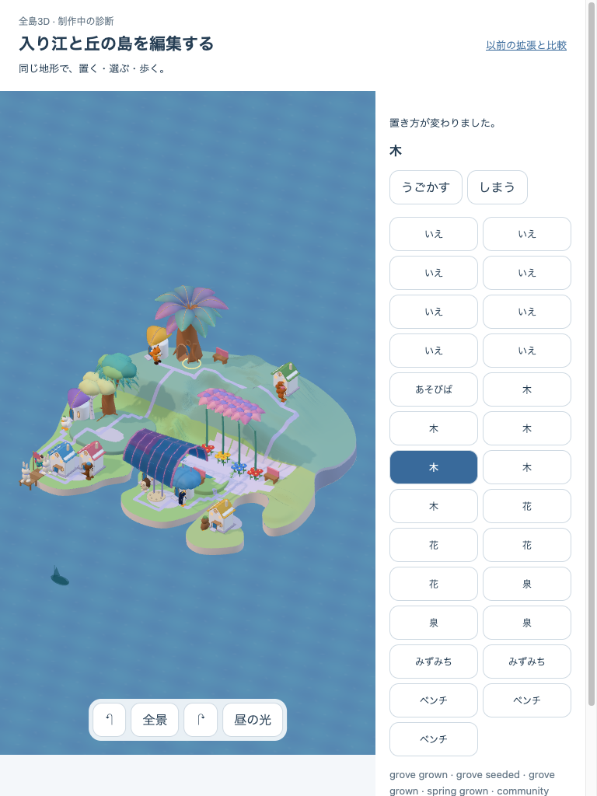

実編集の経路
海と歩行専用地点を拒否し、移動取消、同じ木の分離・収納・復元を実操作した。全layer buildは初期1→移動2→収納3→復元4。選択・preview・保存receiptは全layerを作り直しません。phone/tabletは幅の表示確認で、実機touch・実取得・本人保存の証明ではありません。






captureの版・世界・候補
{
"target": "http://127.0.0.1:5342/prototypes/place-qa/authored.html",
"buildRevision": "authored-editable-m1-perf-a2",
"configuredFlags": {
"VITE_ISLAND_ENABLED": true,
"VITE_NATIVE_GROWING_ART": true
},
"delivery": "DEV synthetic 27-owner authored world; main GrowingWorld renderer; no player DB write",
"metadata": {
"artCandidate": "native05-authored-runtime-m1",
"landscapeProjection": "authored-floor-v1",
"nativeGrowingArt": "true",
"growingFeatureEnabled": "true",
"worldDefinition": "native05-authored-world-m0-v2",
"nativeKitSha256": "7a02fb27a0dfad8d1cb4b2700074b9de42dddb052611354176bddf4bf69f6a34",
"nativeSourceSha256": "8398eda9ac084a6e80ed22f1a82670c380b017544a177106325aaa7ba7f8f68d",
"growingSceneCounters": "{\"fullLayerBuild\":1,\"previewUpdate\":0,\"receiptReuse\":1}",
"growingShaderWarmup": "{\"status\":\"ready\",\"meshes\":444,\"ms\":521,\"programs\":30}"
}
}固定sourceの編集report · 既存島の学習・保存回帰 · 同じsourceのCPU診断 · 13項目の最終一致 · verification manifest